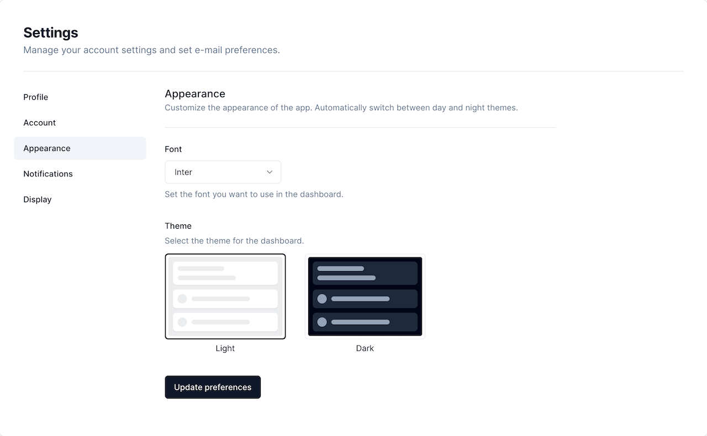

首頁 · H-01
Nextcloud Dashboard · 原作完整桌面畫面

助手對話 · PC01
assistant-ui · Weather in Tokyo 原作示例

照顧記錄 · C-01
Baby Buddy Timeline · 原作桌面視窗

設定 · S-01
shadcn/ui · Settings / Appearance 原作畫面


記憶與參考 · MR-01
Trilium Notes · Trilium Demo 原作桌面視窗